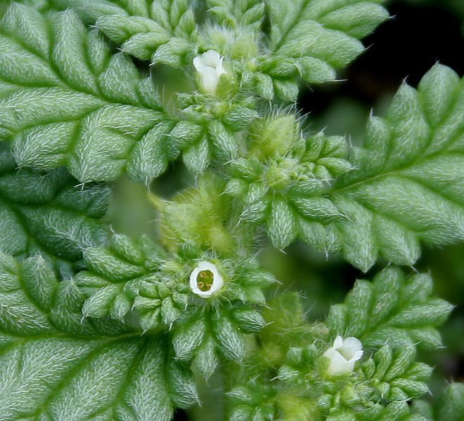

त्रिपंखीTrailing Coldenia
Coldenia procumbens · Boraginaceae · FLR-0248

- Scientific name वैज्ञानिक नाम
- Coldenia procumbens L.
- Family कुल
- Boraginaceae
- Hindi हिंदी
- त्रिपंखी
- Local names स्थानीय नाम
- tripankhi, trailing coldenia, coldenia
- Status here यहाँ की स्थिति
- native
- Movement आवागमन
- Resident, here all year
- Known from कहाँ दर्ज
- Others have published records from the wider Awadh–Purvanchal plain, none yet from Basti–Ayodhya अवध–पूर्वांचल से दूसरों के प्रकाशित अभिलेख, बस्ती–अयोध्या से अभी नहीं
- IUCN IUCN
- not evaluated
- Review समीक्षा
- audited and independently read
When to look कब देखें
Present all year. साल भर मौजूद।
Uses and possibilities उपयोग और संभावनाएँ
“Traditional medicine” means a documented traditional use, not a claim that it works. Nothing on this page is medical advice.
Drawn from the documented uses in the profile below, where each is labelled traditional, current or a research lead. All uses →
Tell it apart from इनसे अलग पहचानें
त्रिपंखी / Trailing Coldenia
Coldenia procumbens L. — Boraginaceae
त्रिपंखी (क्रिपिंग ग्लू फ्लावर) — एक छोटा, जमीन पर फैलने वाला पौधा जो उजाड़ ज़मीन, सड़क किनारे और रेतीली मिट्टी पर आसानी से उग आता है। नाम "त्रिपंखी" को कभी-कभी तीन पत्तियों की व्यवस्था से जोड़ा जाता है, हालांकि यह व्याख्या पूरी तरह स्पष्ट नहीं है। बहुत छोटे नीले या नीले-बैंगनी फूल गर्मी के महीनों में दिखते हैं। यह एक कमजोर खरपतवार है जो खेती की गई ज़मीन पर अधिक नुकसान नहीं करता।
Quick Identification त्वरित पहचान
| Feature | Description |
|---|---|
| Plant habit | Prostrate annual herb, spreading on ground, 5–30 cm |
| Leaves | Small, obovate-spathulate, 0.5–2 cm, hairy, opposite or alternate |
| Flowers | Small (3–5 mm), blue or lavender, axillary, usually in small clusters |
| Stem | Thin, trailing, hairy, rooting at nodes when in contact with moist soil |
| Roots | Tap root with adventitious roots at nodes |
| Texture | Sticky or mucilaginous when wet |
Field tip: On bare, sandy ground or a neglected roadside in summer, look for a small, prostrate herb with tiny leaves and minute blue flowers forming loose clusters. The plant spreads flat on the ground, resembling a star in outline. The texture is sticky or slimy when wet.
हिंदी — कैसे पहचानें: बहुत छोटा पौधा, जमीन पर फैला हुआ, नीले फूल, बहुत महीन पत्तियाँ।
Morphology आकारिकी
Biometrics:
| Measurement | Range |
|---|---|
| Plant spread | 5–30 cm |
| Leaf length | 0.5–2 cm |
| Leaf width | 0.3–1 cm |
| Flower diameter | 3–5 mm |
Stems and branches: Herbaceous, trailing, much branched, hirsute with simple hairs, rooting at nodes.
Leaves: Simple, opposite or alternate, obovate-spathulate, margins entire or slightly wavy, covered with fine hairs, sessile or nearly so.
Flowers: Small, subsessile or with short pedicels, blue or purple-blue, four or five lobed, solitary or in small clusters at leaf axils. The flowers are sticky or mucilaginous.
Fruits: Nutlets, small, persistent, four-lobed.
हिंदी: पूरा पौधा छोटा, पत्तियाँ बहुत महीन, फूल नीले, सब कुछ हवेदार।
Behaviour & Ecology व्यवहार और पारिस्थितिकी
A small prostrate annual of dry, disturbed ground, thriving in poor, sandy soils where few other plants establish. It germinates after light rains and grows slowly through the warm season. The plant is adapted to harsh conditions with its small leaves and trailing growth form that reduces water loss. The sticky texture of the plant tissues may help protect against desiccation. Though weedy, it is of negligible agricultural importance due to its small size and slow growth.
हिंदी: उजाड़ ज़मीन पर उगता है, गर्मी में धीरे-धीरे बढ़ता है, बहुत बीज नहीं देता।
Life Cycle / Phenology जीवन चक्र
| Month / season | Event |
|---|---|
| April–June | Germination and slow growth |
| June–September | Continued slow growth; flowering begins in heat stress conditions |
| September–November | Flowering and fruit set |
| December–March | Reduced growth or dormancy in dry season; plant dies in frost |
The plant is short-lived, usually completing its life cycle in a single season.
हिंदी: गर्मी में उगता है, धीरे-धीरे फूल आता है, बारिश में दब जाता है।
Associated Species / Interactions संबंधित प्रजातियाँ
- Desert companions: Cocklebur, spurge species in dry, sandy ground
- Cohabitats: found alongside Touch-me-not, Lantana in disturbed areas
Pests and Diseases कीट और रोग
Rarely damaged by pests; the small size and sparse leaves offer little attraction to herbivorous insects.
Agricultural / Human Relevance कृषि प्रासंगिकता
Agricultural status. Not a serious weed; found mainly on degraded land rather than in cultivated fields. Rarely a problem for farmers.
Ethnobotanical status. No documented traditional use; of no known economic importance.
Today. Of minimal commercial or cultural use; occasionally noted in botanical surveys of degraded lands.
हिंदी: किसानों के लिए कोई परेशानी नहीं, आयुर्वेद में इस्तेमाल नहीं, बस उजाड़ ज़मीन पर दिखता है।
Expected Locally स्थानीय रूप से अपेक्षित
Not a field record. Written from published accounts for eastern Uttar Pradesh. No confirmed local sighting yet — if you have seen it, that is what the atlas needs.
अभी तक स्थानीय पुष्टि नहीं। यह विवरण प्रकाशित स्रोतों से है, किसी अवलोकन से नहीं।
GBIF holds published records from the wider Awadh–Purvanchal plain, none yet from Basti–Ayodhya. To be expected on dry, sandy, or gravelly waste ground from April through November, particularly after summer rains. Likely present but not yet formally recorded.
Distribution वितरण
Global range: Native to tropical and subtropical regions of Asia and Africa; widespread across the Indian subcontinent.
In India: Found across the Indo-Gangetic plain and in drier peninsular regions.
In Uttar Pradesh: Recorded from scattered locations in the drier upland parts.
In Basti district / eastern UP: Likely present in waste ground but not yet formally confirmed.
Research Questions शोध प्रश्न
Anyone can investigate these | कोई भी इन प्रश्नों की जाँच कर सकता है
- Where do you find Coldenia procumbens in your area, and what does the soil look like? / आपके इलाक़े में यह पौधा कहाँ मिलता है, और वहाँ मिट्टी कैसी होती है? — Sample soil from where you find the plant.
- Does it prefer sandy soil, clay, or mixed? / इसे कौन सी ज़मीन पसंद है? — Compare growth in different soil types.
- How long does it take to complete its life cycle? / इसका पूरा जीवन चक्र कितने दिन में पूरा होता है? — Mark seedlings and track development.
- Is the sticky texture a defense against insects or a water-conservation mechanism? / यह चिपचिपापन क्या काम करता है? — Compare water loss from sticky versus non-sticky plants.
- Do any animals feed on this plant? / कोई जानवर इसे खाता है? — Observe for herbivory marks.
Similar Species मिलती-जुलती प्रजातियाँ
| Species | How to tell apart | हिंदी |
|---|---|---|
| Field Bindweed (Convolvulus arvensis) | Trailing vine with twining stems; pink or white flowers in funnel shape; larger leaves | बेल, गुलाबी फूल, बड़ी पत्तियाँ |
| Linum species (flax) | Upright herb, not spreading; flowers larger, in flat clusters; from different family | सीधा खड़ा पौधा, बड़े फूल, अलग परिवार |
Field rule: A tiny, flat-spreading herb with minute leaves, small blue flowers, and a sticky texture that seems to glue itself to the ground is Coldenia procumbens.
Taxonomy & Classification वर्गीकरण
Original description. Described by Linnaeus in 1753 in Species Plantarum. The name Coldenia honors Cadwallader Colden, an 18th-century botanist and physician.
Subspecies. Monotypic — no subspecies are currently recognised.
Family and order placement. Boraginaceae (the borage family), order Boraginales. A monotypic genus with Coldenia procumbens being the only widely recognized species.
Phylogenetic notes. Coldenia is a basal genus within Boraginaceae; its affinities are with other Old World boraginaceous genera.
IUCN status rationale. Not evaluated. Widespread in arid regions; no conservation concern.
Photo Gallery फोटो गैलरी
Photos needed आवश्यक फोटो
- [ ] Whole plant spread on ground, May (जमीन पर फैला पूरा पौधा)
- [ ] Flowers and leaves close-up (फूल और पत्तियों का विस्तार)
- [ ] Plant in a sandy waste area (उजाड़ ज़मीन पर)
No photos yet — add field photos to media/species/trailing_coldenia/ and run node scripts/sync_photos.js.
References संदर्भ
- Linnaeus, C. (1753). Species Plantarum, ed. 2. Stockholm. [original description]
- Hooker, J.D. (1882). The Flora of British India, vol. 4. L. Reeve, London. (Coldenia)
- Duthie, J.F. (1903). Flora of the Upper Gangetic Plain and of the Adjacent Siwalik and Sub-Himalayan Tracts. Government Printing, Calcutta.
- Lammers, T.G. & Friis, I. (1994). The Boraginaceae of the Socotra Islands and Aden Protectorate. Notes from the Royal Botanic Garden, Edinburgh 51: 321–355.
- Heywood, V.H. et al. (2007). Flowering Plants of the World. Oxford University Press, Oxford.
- GBIF Occurrence Data — Coldenia procumbens, India (2026).
Source file: species/flora/weeds/trailing_coldenia.md